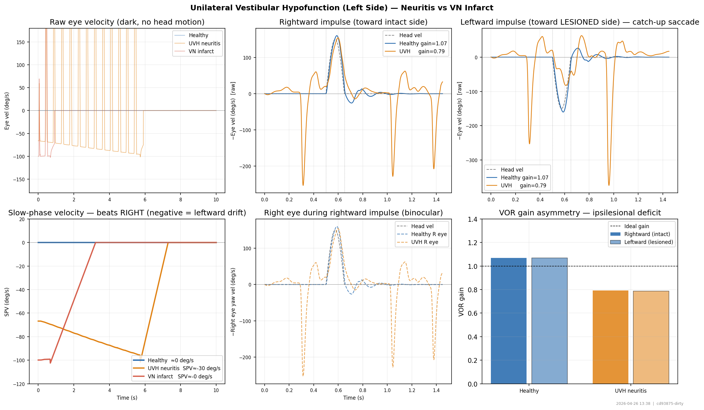
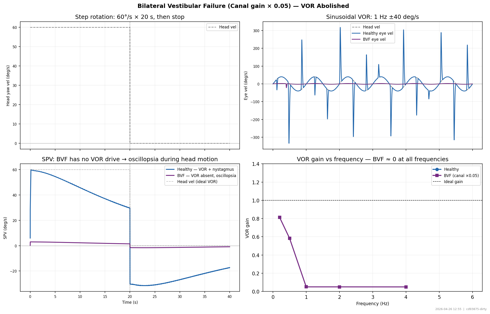
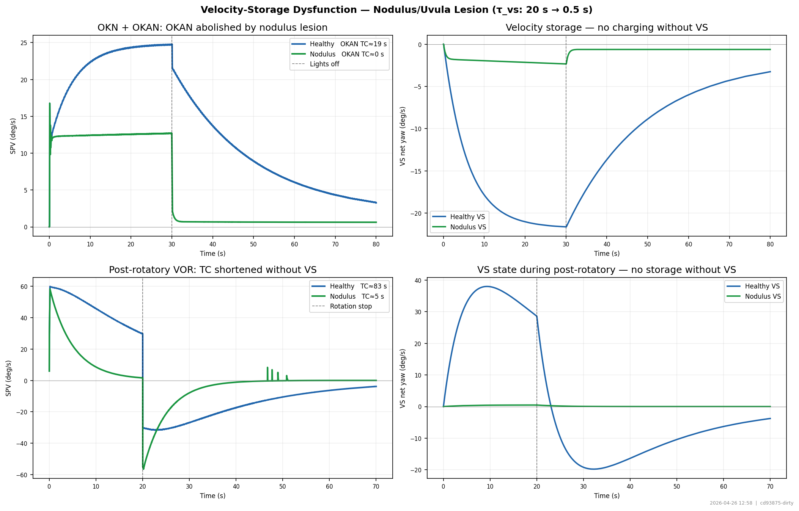
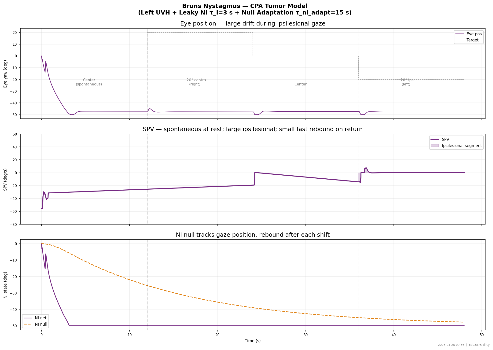
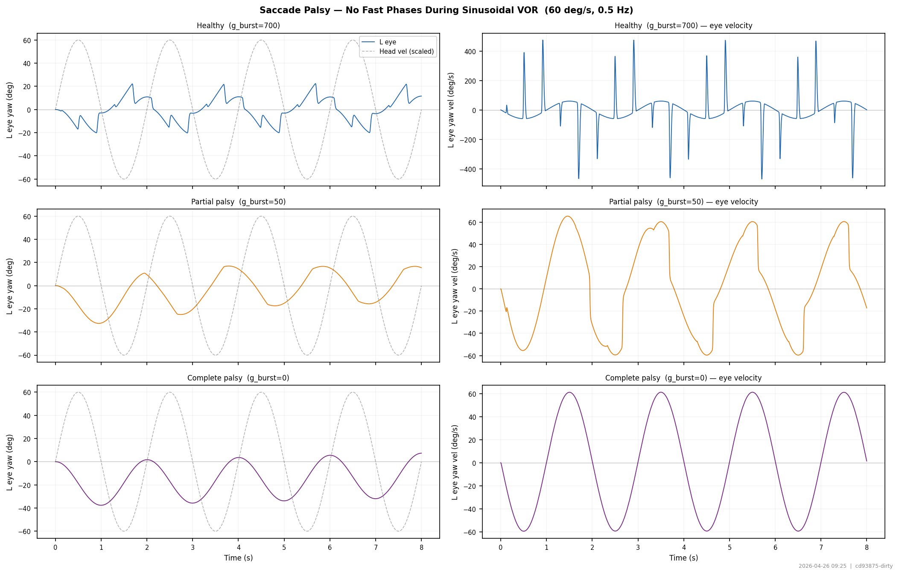

OculomotorJax — Clinical Benchmarks
A. Vestibular Lesions
Peripheral and central vestibular pathology: unilateral hypofunction, bilateral failure, nodulus/uvula lesion, and VOR gain asymmetry.

Unilateral Vestibular Hypofunction — Spontaneous Nystagmus + vHIT
Left UVH (neuritis, 30% afferent loss) vs VN infarct (100%). Spontaneous nystagmus beats toward intact side. vHIT: reduced gain ipsilesionally.
📖 Halmagyi & Curthoys (1988) Arch Neurol; Fetter & Zee (1988) JNEN
cascade
Bilateral Vestibular Failure
Canal gains × 0.05 (ototoxicity / bilateral Ménière disease). VOR abolished: oscillopsia during head movement. Normal OKN.
📖 Gillespie & Minor (1999) Laryngoscope; Cohen et al. (1973)
behavior
Velocity-Storage Dysfunction (Nodulus Lesion)
τ_vs → 0.5 s models cerebellar nodulus/uvula ablation. OKAN and post-rotatory VOR TC both reduced to ≈ canal TC.
📖 Cohen et al. (1981) Brain Res; Waespe et al. (1985) Science
behaviorB. Gaze-Holding & Integrator Disorders
Neural integrator and velocity-storage pathology: gaze-evoked nystagmus (leaky NI), rebound nystagmus (NI null adaptation), Bruns nystagmus, and extended OKAN (VS null adaptation / PAN precursor).

Gaze-Evoked Nystagmus (GEN)
NI leak TC reduced: healthy 25 s → moderate 6 s → severe 2 s. Centripetal drift during eccentric gaze; corrective fast phases.
📖 Cannon & Robinson (1985) Biol Cybern; Zee et al. (1976) J Neurophysiol
behavior
Rebound Nystagmus
NI null adaptation TC = 20 s. Hold 20° for 20 s, return to center. Null persists → rebound beats toward center.
📖 Zee et al. (1980) Brain; Hood & Leech (1974) J Neurol
behavior
Bruns Nystagmus (CPA Tumor)
Left UVH + leaky NI (τ_i=3 s) + null adaptation (τ=15 s). Large nystagmus ipsilesionally; small fast rebound contraversively.
📖 Bruns (1902); Leigh & Zee (2015) Neurology of Eye Movements
behavior
Extended OKAN / VS Null Adaptation
VS null adaptation (τ_vs_adapt 600→60 s) prolongs OKAN. PAN would require inhibitory null coupling (future work).
📖 Cohen et al. (1992) J Neurophysiol; Leigh et al. (1981) Neurology
behaviorC. Cranial Nerve Palsies, Motor Nuclear Lesions & INO
Simulated 9 positions of gaze and saccade trajectories under CN VI (abducens nerve / nucleus), CN III (oculomotor), CN IV (trochlear) palsies and internuclear ophthalmoplegia (INO). Graded recovery series for CN VI nerve palsy and partial INO.

9 Positions of Gaze
Standard clinical 9-position gaze test. Each panel shows left (blue circles) and right (red squares) final eye positions after a saccade to each of the 9 standard fixation targets. Vertical or horizontal gaps between paired symbols reveal the duction deficit for each lesion.
📖 Leigh RJ & Zee DS (2015) The Neurology of Eye Movements, 5th ed.
behavior
INO Saccade Trajectories
Horizontal saccade position and velocity for healthy, left INO, right INO, and bilateral INO. Left INO impairs left-eye adduction on rightward saccades; right INO impairs right-eye adduction on leftward saccades. Dashed = left eye; solid = right eye.
📖 Bhidayasiri R et al. (2000) Brain 123:1241-1267 — INO pathophysiology; Zee DS et al. (1992) Ann Neurol 32:756-764 — BIMLF syndrome.
cascade
Graded CN VI and INO Recovery
Rightward 20.0° saccade for partial CN VI nerve palsy (top, g_nerve[LR_R]) and partial left INO (bottom, g_mlf_ver_L) at five gain levels (1.0 = healthy, 0.0 = complete lesion). Models incomplete recovery or graded paresis.
📖 Keller EL & Robinson DA (1972) J Neurophysiol 35:466-476 — partial lesion quantification; Frohman TC et al. (2003) J Neuro-ophthalmol 23:106-113 — graded INO.
behaviorD. Saccadic Disorders
Slow saccades from reduced burst-neuron drive (PPRF/IBN lesion), ocular flutter and square wave jerks from reduced OPN tone, and complete saccadic palsy (absence of fast phases during VOR).

Slow Saccades (Main Sequence Shift)
Main sequence curves and 20° saccade traces for three levels of burst-neuron ceiling (g_burst). Reduced g_burst models reduced excitatory burst neuron drive, as in PPRF or IBN lesions. Dashed = position, solid = velocity (right axis).
📖 Zee DS et al. (1976) Ann Neurol 1:309-315 — PPRF slow saccades; Optican LM & Robinson DA (1980) J Neurophysiol 44:1058-1076 — cerebellar adaptive gain.
behavior
Ocular Flutter and Square Wave Jerks
Static center fixation under healthy, flutter, and SWJ conditions. Flutter: OPN threshold set near zero → saccade generator oscillates continuously. SWJ: moderately relaxed threshold + retinal position noise → pairs of back-to-back saccades with the inter-saccadic fixation interval. Left column = position, right = velocity.
📖 Zee DS & Robinson DA (1979) Ann Neurol 5:207-209 — flutter mechanism; Hepp K et al. (1989) Exp Brain Res 75:551-564 — OPN and saccadic control.
cascade
Saccade Palsy — Loss of Fast Phases During VOR
Sinusoidal head rotation (60 deg/s at 0.5 Hz) in the dark. Left column = eye position, right = velocity. Healthy: sawtooth nystagmus with fast phases. Partial palsy (g_burst=50): occasional slow corrective saccades. Complete palsy (g_burst=0): smooth sinusoidal eye motion only, no fast phases — VOR without nystagmus.
📖 Bhidayasiri R et al. (2001) Brain 124:2523-2547 — pontine gaze palsy; Leigh RJ & Zee DS (2015) The Neurology of Eye Movements.
cascade